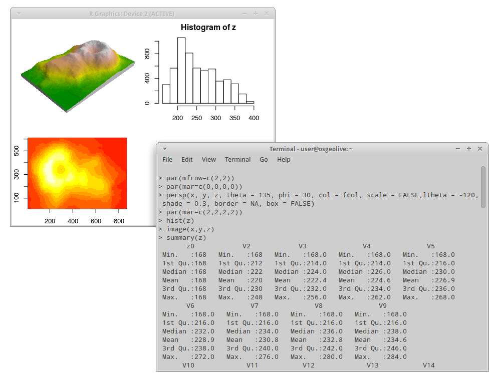

R per dati spaziali¶
Programma di statistica¶
R è un potente ambiente software, utilizzato in molti campi, per il calcolo statistico e rappresentazioni grafiche che eccelle nell’analisi ed elaborazione di serie di dati geografici. Le funzioni di analisi geospaziali in R sono disponibili nei pacchetti di R (moduli che estendono le potenzialità di R), che forniscono l’accesso a un gran numero di algoritmi, tradizionali e d’avanguardia, spesso prima che siano disponibili in altri software sia open source che proprietari. R e i suoi pacchetti possono elaborare punti, linee, poligoni e dati grigliati. Si può effettuare un’ampia gamma di operazioni come: classificazioni di immagini, analisi statistiche per inferire le relazioni spaziali e i modelli ditributivi degli elementi, e altre elencate in fondo alla pagina nelle caratteristiche principali. Le funzioni disponibili attraverso R completano le funzionalità avanzate dei programmi di GIS e di trattamento delle immagini.
L’interfaccia di base di R è una finestra a riga di comando che fornisce un’eccellente flessibilità e controllo, ma tende ad allungare i tempi di apprendimento rispetto ai programmi con interfaccia grafica (GUI). Fortunatamente R ha una buona documentazione sul sito web che facilita il processo di apprendimento. Spesso vengono usati degli script per automatizzare le fasi di elaborazione ma esistono anche GUI, la migliore potrebbe essere RStudio (http://www.rstudio.com).
R è un’implementazione del linguaggio di programmazione S e c’è una buona compatibilità di R con legacy S e il codice S-Plus, così come con le moderne versioni commerciali di S, TIBCO Spotfire S+. Ciò rende possibile la conversione di diverse versioni del codice S per eseguirle su R senza dover modificare il codice principale.
{kind=link}
Caratteristiche principali¶
- Linguaggio di programmazione orientato agli oggetti rivolto alla Statistica e ad applicazioni matematiche intensive simili
- Centinaia di pacchetti aggiuntivi per la statistica spaziale forniti dalla comunità
- Classi per dati spaziali
- Manipolazione di dati spaziali
- Lettura e scrittura di dati spaziali
- Analisi della distribuzione geografica di punti (Point pattern analysis)
- Geostatistica
- Mappe sanitarie e analisi di dati areali
- Regressione spaziale
- Analisi ecologiche
- Potenti algoritmi per il processamento di raster
Dettagli¶
Sito: http://cran.r-project.org
Licenza: GPL
Software Version: 3.2.1
Piattaforme supportate: Windows, Linux, Mac, Unix
Supporto della comunità: http://cran.r-project.org/web/views/Spatial.html